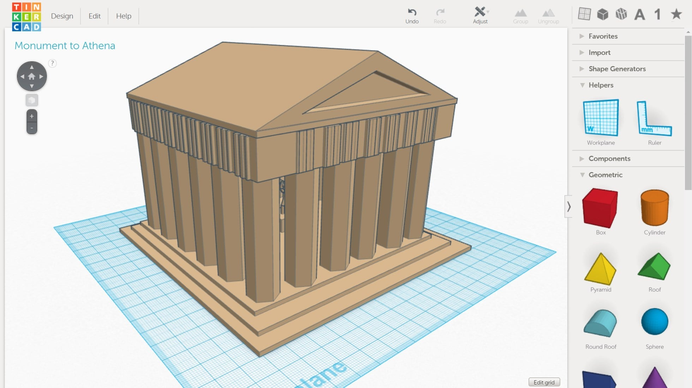

Designing Greek Monuments in 3D
Grades 5-8, 90min
In the Designing Greek Monuments in 3D lesson, students design new monuments to honor events in Greek history, Greek gods, or another aspect of Ancient Greece. After sketching their design on paper, students create their designs in 3D using the web-based modeling tool TinkerCad. Finally, students explain their creations in a short essay to accompany their designs.
Topics addressed
- Architectural style of monuments in Ancient Greece
- Historical and cultural significance of Greek monuments
- Primary CT concept: abstraction. Students distill information about a Greek god or an event in Greek history into a relatively simple 3D design that symbolizes their chosen topic.
Students will be able to
- Design an architectural structure to represent a Greek god or event in Greek history
- Create a monument in 3D using TinkerCad
- Explain how their monument symbolizes their chosen topic
Materials
-
Slides:


-
Student handout:


- TinkerCad
Prep
- Create a Google Doc assignment in Google Classroom (or similar) where students can write their short essay and share the link to their monument in TinkerCad
- Familiarize yourself with TinkerCad for thirty minutes or so, to better support students who have questions while learning how to create models in 3D
Suggested lesson breakdown
This activity can be run in one longer period, or split over two shorter periods.
- 10min – activity introduction with PowerPoint presentation
- 15min – students (individually) select a topic for their monument and draw their 2D sketch on the worksheet
- 5min – walk students through logging into TinkerCad
- 10min – students (individually) work through TinkerCad introductory lessons
- 40min – students create their monuments using TinkerCad
- 10min – students write a short two-paragraph essay explaining how their design relates to their selected topic
Washington State standards
-
WA.SS.6.4.2.2
Understands and analyzes how cultures and cultural groups in ancient civilizations contributed to world history. -
WA.SS.6.3.3.2
Understands the characteristics of cultures in the world from the past or in the present.